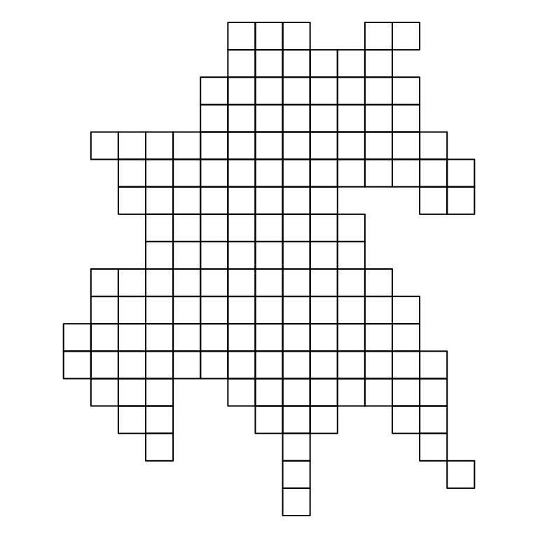
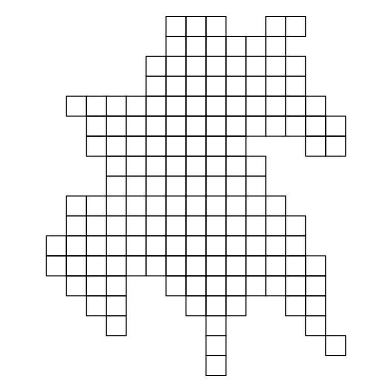

Φόρτωση Δεδομένων
Το πακέτο συνοδεύεται από κάποια δεδομένα κατά κανόνα ανοικτά δημόσια δεδομένα που η προσπάθεια για να συμβάλλουμε στην αξιοποίηση τους έγινε και η αφορμή για ανάπτυξη του συγκεκριμένου πακέτου που σκοπεύει να συμβάλει στην οπτικοποίηση και ανάλυσή τους. Προφανώς για λόγους οικονομίας χρόνου μεταφόρτωσης και αποθηκευτικού χώρου τα δεδομένα αυτά είναι υποσύνολα των δεδομένων που προσφέρονται από τους οργανισμούς που τα διαθέτουν. Τεκμηρίωση και πληροφορίες υπάρχουν στα help files του πακέτου help(“DasyMapR”)` ή στο github
# Αν τρέξει ο κώδικας παρουσιάζονται τα διαθέσιμα δεδομένα
DasyMapR.data <- data(package = "DasyMapR")
print(DasyMapR.data)
Θα φορτώσουμε τα δεδομένα που μεταμορφώθηκαν από το GeoData.open.gov και θα επιλέξουμε τους νομούς της περιφέρειας Πελοποννήσου για τους δασυμετρικούς μας υπολογισμούς.
# Φόρτωσε τα δεδομένα
data("NUTS3_OCMG")
# Δίάλεξε κάποια
pp <- c("Ν. ΑΡΓΟΛΙΔΟΣ", "Ν. ΚΟΡΙΝΘΙΑΣ", "Ν. ΑΡΚΑΔΙΑΣ",
"Ν. ΜΕΣΣΗΝΙΑΣ", "Ν. ΛΑΚΩΝΙΑΣ")
Π.ΠΕΛΟΠΟΝΝΗΣΟΥ <- NUTS3_OCMG[which(!is.na(match(NUTS3_OCMG[["NAME"]],
pp))), ]
par(mar = c(0.1, 0.1, 0.1, 0.1))
# και σχεδίασε τα
plot(NUTS3_OCMG)
plot(Π.ΠΕΛΟΠΟΝΝΗΣΟΥ, border = 2, lwd = 2, add = T)
plot(Π.ΠΕΛΟΠΟΝΝΗΣΟΥ, border = 2, lwd = 2)

ας δούμε και τα περιγραφικά δεδομένα των νομών που περιέχει το αρχείο.
# Τα περιγράφικά σε πίνακα
kable(head(Π.ΠΕΛΟΠΟΝΝΗΣΟΥ@data[, 3:10]))
| 13 |
Ν. ΜΕΣΣΗΝΙΑΣ |
166964 |
2995.27 |
55.7426 |
166566 |
82556 |
84010 |
-0.0023838 |
| 16 |
Ν. ΛΑΚΩΝΙΑΣ |
95696 |
3631.73 |
26.3500 |
92811 |
45310 |
47501 |
-0.0301476 |
| 23 |
Ν. ΑΡΓΟΛΙΔΟΣ |
97636 |
2157.00 |
45.2647 |
102392 |
50308 |
52084 |
0.0487115 |
| 25 |
Ν. ΑΡΚΑΔΙΑΣ |
105309 |
4423.48 |
23.8068 |
91326 |
43826 |
47500 |
-0.1327810 |
| 41 |
Ν. ΚΟΡΙΝΘΙΑΣ |
141823 |
2297.75 |
61.7226 |
144527 |
71771 |
72756 |
0.0190660 |
Κατηγορικά Δεδομένα - Η χρήση της MaxArea
Η Νομοί έχουν ένα ποιοτικό χαρακτηριστικό αυτό της “Ονομασίας” Π.ΠΕΛΟΠΟΝΝΗΣΟΥ[["ΝΑΜΕ"]] που τους προσδίδει την ιδιότητα του Νομού (περιοχή διοικητικής διαίρεσης). Θα ήταν χρήσιμο αυτή η ιδιότητα να αποδοθεί στα κελιά του κανάβου αφού με βάση αυτή την ιδιότητα στη συνέχεια θα μπορούσαν να του π.χ. αποδοθούν και άλλα χαρακτηριστικά που έχουν ως επιφάνεια απαρίθμησης, αυτή ακριβώς την ιδιότητα δηλαδή του νόμου. Το κελί σε αυτήν την περίπτωση των κατηγορικών δεδομένων παίρνει την τιμή της επιφάνειας που καταλαμβάνει το μεγαλύτερο μέρος του κελιού. Η μέθοδος etrsSurface που δέχεται ορίσματα την επιφάνεια input.surface την μέθοδο Max.Area και το μέγεθος του κελιού cell.size. Θα πρέπει να αναφερθεί εδώ ότι η επιφάνεια NUTS3_OCMG είναι σε σύστημα συντεταγμένων ΕΓΣΑ87(GGRS’87 (EPSG:2100)) όμως τα αποτελέσματα δηλαδή η τελικά υπολογιζόμενη etrsSurface θα έχει πλέον σύστημα αναφοράς το ETRS-LAEA καλώντας κατά τους υπολογισμούς την DasyMapR::etsrTransform() του πακέτου και στέλνει μήνυμα warning ενημερώνοντας για την μετατροπή.
library(DasyMapR)
# Καλεί την EtrsTransForm
srf.grd.max <- etrsSurface(input.surface = Π.ΠΕΛΟΠΟΝΝΗΣΟΥ, over.method.type = "MaxArea",
cell.size = 10000)
plot(Π.ΠΕΛΟΠΟΝΝΗΣΟΥ)
plot(srf.grd.max)
 

Το αντικείμενο που δημιουργήθηκε δηλαδή srf.grd.max είναι αντικείμενο κλάσης EtrsSurface και τα περιγραφικά δεδομένα στο slot (@data) είναι σε μορφή πίνακα :
kable(head(srf.grd.max@data))
| 10kmE543N158 |
10kmE543N158 |
5430000 |
1580000 |
16 |
| 10kmE543N159 |
10kmE543N159 |
5430000 |
1590000 |
16 |
| 10kmE549N159 |
10kmE549N159 |
5490000 |
1590000 |
16 |
| 10kmE538N160 |
10kmE538N160 |
5380000 |
1600000 |
13 |
| 10kmE543N160 |
10kmE543N160 |
5430000 |
1600000 |
16 |
| 10kmE548N160 |
10kmE548N160 |
5480000 |
1600000 |
16 |
Όπως φαίνεται στο πίνακα τα στοιχεία που περιέχονται είναι ο κωδικός $CELLCODEτου κελιού οι συντεταγμένες του κάτω άκρου του κελιού $EASTOFORIGIN,$NORTHOFORIGIN" και ο αριθμός αναγνώρισης της επιφάνειας $FEATURE από την οποία έχει πάρει την ιδιότητα το κελί. Ο κωδικός του κελιού που επαναλαμβάνεται στην αρχή είναι η ιδιότητα row.names() του data.frame @data και χρησιμεύει ως αναγνωριστικό σύνδεσης με το γεωμετρικό μέρος του αντικείμενου. (@polygons). Περισσότερες πληροφορίες για την δομή του αντικειμένου EtrsSurface αλλά και του SpatialPolygonsDataFrame παρέχονται στο κυρίως κείμενο και στα help files.
Θα ήταν χρήσιμο να συμπεριλάβει κάποιος ιδιότητες από τα περιγραφικά δεδομένα της επιφάνειας πηγής στο πίνακα δεδομένων των κελιών. H μέθοδος DasyMapR::joinMaxAreaSurfaceDataFrame μπορεί να κληθεί και να συνενώσει τα χαρακτηριστικά που δεν έχουν συμπεριληφθεί αρχικά ως ιδιότητες της νέας επιφάνειας (του κανάβου).
srf.grd.max.full <- joinMaxAreaSurfaceDataFrames(the.surface = NUTS3_OCMG, the.EtrsSurface = srf.grd.max)
kable(head(srf.grd.max.full@data[, c(7:12)]))
| 10kmE538N162 |
Ν. ΜΕΣΣΗΝΙΑΣ |
166964 |
2995.27 |
55.7426 |
166566 |
82556 |
| 10kmE538N160 |
Ν. ΜΕΣΣΗΝΙΑΣ |
166964 |
2995.27 |
55.7426 |
166566 |
82556 |
| 10kmE538N163 |
Ν. ΜΕΣΣΗΝΙΑΣ |
166964 |
2995.27 |
55.7426 |
166566 |
82556 |
| 10kmE539N163 |
Ν. ΜΕΣΣΗΝΙΑΣ |
166964 |
2995.27 |
55.7426 |
166566 |
82556 |
| 10kmE536N162 |
Ν. ΜΕΣΣΗΝΙΑΣ |
166964 |
2995.27 |
55.7426 |
166566 |
82556 |
| 10kmE537N162 |
Ν. ΜΕΣΣΗΝΙΑΣ |
166964 |
2995.27 |
55.7426 |
166566 |
82556 |
Κάτι που πρέπει να επισημανθεί εδώ είναι ότι ο χρήστης πρέπει πάντα να έχει υπόψη του τι δεδομένα έχει και τι αναγωγές πρέπει να κάνει για να έχει ορθά αποτελέσματα. Για παράδειγμα στον τελευταίο πίνακα στο κελί ως τιμές του πληθυσμού εμφανίζονται οι $POP91 ή $pl2001. Αυτό είναι λάθος διότι η τιμές αυτές αναφέρονται στις αρχικές επιφάνειες απαριθμήσεις δηλαδή στους νομούς. Ακόμη και η τιμή της πυκνότητας ανά κελί είναι εσφαλμένη αφού δεν έχουν γίνει κατάλληλες αναγωγές.
Ο χρόνος που χρειάζεται για να γίνουν οι υπολογισμοί μπορούν να μειωθεί με την χρήση της μεθόδου DasyMapR::etrsSurfacePar() όπου γίνεται χρήση περισσοτέρων πόρων του συστήματος (επεξεργαστών και πυρήνων) με την χρήση των πακέτων foreach και doParaller της R. Περισσότερες πληροφορίες για αυτό μπορούν να βρεθούν στο κυρίως κείμενο.
Αριθμητικά (ποσοτικά) Δεδομένα - Η χρήση της PropCal
Για την καλύτερη παρακολούθηση του παραδείγματος και κάνοντας χρίση των ίδιων δεδομένων που αντλήσαμε από το GeoData.open.gov θα κρατήσουμε μόνο τις στήλες που είναι χρήσιμες για το τρέχον παράδειγμά.
# Θα κρατήσουμε μόνο τον πλυθισμό του 2001
Π.ΠΕΛΟΠΟΝΝΗΣΟΥ.2001 <- Π.ΠΕΛΟΠΟΝΝΗΣΟΥ[, c(3, 7)]
kable(Π.ΠΕΛΟΠΟΝΝΗΣΟΥ.2001@data)
| 13 |
Ν. ΜΕΣΣΗΝΙΑΣ |
166566 |
| 16 |
Ν. ΛΑΚΩΝΙΑΣ |
92811 |
| 23 |
Ν. ΑΡΓΟΛΙΔΟΣ |
102392 |
| 25 |
Ν. ΑΡΚΑΔΙΑΣ |
91326 |
| 41 |
Ν. ΚΟΡΙΝΘΙΑΣ |
144527 |
Η τιμή στόχος που θέλουμε να επιμερίσουμε στον κάναβο είναι αυτή του πληθυσμού. Αν επιμερίσουμε αυτή την τιμή του χαρακτηριστικού pl$2001 θα αποδώσουμε στο κελί λανθασμένη τιμή (όπως προαναφέρθηκε) . Θα πρέπει να μετατραπεί από απόλυτη τιμή σε πυκνότητα πληθυσμού. Στο πακέτο έχει αναπτυχθεί η μέθοδος ():DasyMapR::ActullVal2Density() που θα κάνει την μετατροπή
Π.ΠΕΛΟΠΟΝΝΗΣΟΥ.2001 <- ActuallVal2Density(input.surface = Π.ΠΕΛΟΠΟΝΝΗΣΟΥ.2001,
surface.value.col = 2, area.unit = 1e+06)
kable(Π.ΠΕΛΟΠΟΝΝΗΣΟΥ.2001@data)
| 13 |
Ν. ΜΕΣΣΗΝΙΑΣ |
166566 |
2995.265 |
55.6098 |
| 16 |
Ν. ΛΑΚΩΝΙΑΣ |
92811 |
3631.734 |
25.5556 |
| 23 |
Ν. ΑΡΓΟΛΙΔΟΣ |
102392 |
2157.004 |
47.4696 |
| 25 |
Ν. ΑΡΚΑΔΙΑΣ |
91326 |
4423.483 |
20.6457 |
| 41 |
Ν. ΚΟΡΙΝΘΙΑΣ |
144527 |
2297.754 |
62.8993 |
Η τιμή $VALUE πλέον αναφέρεται σε κατοίκους/km2 και εκφράζει πυκνότητα. Το @data$VALUE (slot) πλέον περιέχει και την τιμή του εμβαδού σε km2.
Θα επιμερίσουμε την τιμή με την χρήση της μεθόδου etrsSourceSurface() για την τιμή (VALUE) της πυκνότητας Η μέθοδος που είναι καταλληλότερη για τον υπολογισμό της τιμής του κελιού μετά την προβολή της επιφάνειας θα είναι αυτή του αναλογικού υπολογισμού σε σχέση με την επιφάνεια \(CELLVALUE = (V~i~ ∗ Share~i~)\) όπου Vi, η τιμή της επιφάνειας και Sharei, το μερίδιο της επιφάνειας i μέσα στο κελί
srf.grd.prop <- etrsSourceSurface(input.surface = Π.ΠΕΛΟΠΟΝΝΗΣΟΥ.2001,
over.method.type = "PropCal", surface.value.col = 4, cell.size = 10000)
par(mar = c(0.1, 0.1, 0.1, 0.1))
plot(Π.ΠΕΛΟΠΟΝΝΗΣΟΥ)
plot(srf.grd.prop)


Το αντικείμενο που δημιουργήθηκε είναι αντικείμενο της κλάσης EtrsSourceSurface και ο πίνακας που είναι συσχετισμένος με την επιφάνεια περιεχέι τα χαρακτηριστικά
kable(head(srf.grd.prop@data))
| 10kmE543N157 |
10kmE543N157 |
5430000 |
1570000 |
0.7308902 |
| 10kmE544N157 |
10kmE544N157 |
5440000 |
1570000 |
5.8726769 |
| 10kmE543N158 |
10kmE543N158 |
5430000 |
1580000 |
18.1751427 |
| 10kmE544N158 |
10kmE544N158 |
5440000 |
1580000 |
10.2094622 |
| 10kmE548N158 |
10kmE548N158 |
5480000 |
1580000 |
3.1382277 |
| 10kmE549N158 |
10kmE549N158 |
5490000 |
1580000 |
3.0538942 |
Λεπτομέρειες για τον υπολογισμό της $CELLVALUE μπορεί κάποιος να βρει αν φορτώσει το προσωρινό αρχείο με όνομα “.surface.detailed.table.rds” που αποθηκεύετε στο working directory. Για το παράδειγμα της συγκεκριμένης εργασίας φορτώνουμε το εν λόγω αρχείο (.rds) και εμφανίζουμε ορισμένες γραμμές του.Σε αυτές εμφανίζονται οι τιμές για τμήμα του κελιού πριν την άθροιση και τον τελικό υπολογισμό (για αυτό και εμφανίζονται row.names(srf.grd.prop@data) με την προσθήκη αριθμού ώστε να είναι μοναδικός ο κωδικός αριθμός ID.
wd <- getwd()
setwd(wd)
surface.detailed.table <- readRDS(".surface.detailed.table.rds")
kable(head(surface.detailed.table, 5))
| 10kmE535N162 |
10kmE535N162 |
13 |
4397492.7219 |
0.044 |
55.6098 |
2.4468312 |
2.4468312 |
| 10kmE535N163 |
10kmE535N163 |
13 |
56497430.9614 |
0.565 |
55.6098 |
31.419537 |
31.4195370 |
| 10kmE535N164 |
10kmE535N164 |
13 |
70146605.3695 |
0.7015 |
55.6098 |
39.0102747 |
39.0102747 |
| 10kmE535N165 |
10kmE535N165 |
13 |
12837374.7196 |
0.1284 |
55.6098 |
7.14029832 |
7.1402983 |
| 10kmE535N166 |
10kmE535N166 |
13 |
1388355.6794 |
0.0139 |
55.6098 |
0.77297622 |
0.7729762 |
Για πολλά δεδομένα προτείνεται να γίνει χρήση των προσφερόμενων parallel computing μεθόδων
Ανακεφαλαιώνοντας - Η επιφάνεια Εισόδου
Ίσως να μην έχει γίνει κατανοητό πως οι διαφορετικές μέθοδοι επηρεάζουν την γεωγραφική απεικόνιση της επιφάνειας πηγής για αυτό στο επόμενο σχήμα απεικονίζονται οι δύο περιπτώσεις εφαρμογής των δύο μεθόδων.
# Η κλήση της EtrsTrasnform για αλλαγη του CRS
Π.ΠΕΛΟΠΟΝΝΗΣΟΥ.ETRS <- EtrsTransform(Π.ΠΕΛΟΠΟΝΝΗΣΟΥ)
par(mar = c(0.1, 0.1, 0.1, 0.1))
plot(Π.ΠΕΛΟΠΟΝΝΗΣΟΥ.ETRS, border = 2, lwd = 2)
plot(srf.grd.max, col = rgb(0, 1, 0, 0.1), add = TRUE)
plot(Π.ΠΕΛΟΠΟΝΝΗΣΟΥ.ETRS, border = 2, lwd = 2)
plot(srf.grd.prop, col = rgb(0, 1, 0, 0.1), add = TRUE)

Στην πρώτη περίπτωση η επιφάνεια μπορεί να μην καλύπτεται ή υπερκαλύπτεται ενώ στην δεύτερη πάντα υπερκαλύπτεται. Είναι διακριτό ότι η μέθοδος που επιλέγεται είναι σημαντική για την απόκρυψη ή μη πληροφορίας και την παραγωγή σφαλμάτων (στην πρώτη εικόνα τμήματα ξηράς εξαιρούνται από την ανάλυση μας στην δεύτερη τμήματα της λογίζονται πλέον ως ξηρά). Περισσότερα σχετικά με τα σφάλματα της μεθόδου μπορεί να αναζητηθούν εδω Για να είναι “ρεαλιστικότερο” το παράδειγμα μας θα αλλάξουμε επίπεδο αναφοράς και από το επίπεδο της περιφέρειας θα περάσουμε στο επίπεδο της περιφερειακής ενότητας (νομού ή NUTS3) και της ανάλυσης από τον κάναβο του 10km στον κάναβο 1km. Επιλέγεται εδώ ο νόμος Αργολίδας
par(mar = c(0.1, 0.1, 0.1, 0.1))
ΑΡΓΟΛΙΔΑ <- NUTS3_OCMG[which(!is.na(match(NUTS3_OCMG[["NAME"]], "Ν. ΑΡΓΟΛΙΔΟΣ"))),
]
plot(Π.ΠΕΛΟΠΟΝΝΗΣΟΥ)
plot(ΑΡΓΟΛΙΔΑ, add = TRUE, lwd = 2, border = 2)
# Εδώ καλείται η EtrsTransform απευθείας
ΑΡΓΟΛΙΔΑ.ETRS <- EtrsTransform(ΑΡΓΟΛΙΔΑ)
# Με την κλήση της etrsSourceSurface παράγεται η επιφανεια πηγή
source.surface <- etrsSourceSurface(input.surface = Π.ΠΕΛΟΠΟΝΝΗΣΟΥ.2001[3,
], over.method.type = "PropCal", surface.value.col = 4, cell.size = 1000)
plot(source.surface, col = rgb(0, 1, 0, 0.01), lwd = 0.5, border = "lightgrey")
plot(ΑΡΓΟΛΙΔΑ.ETRS, add = TRUE, lwd = 2, border = 2)

Η Βοηθιτική επιφάνεια
Θα γίνει χρήση των δεδομένων CORINE 2000 δηλαδή των δεδομένων κάλυψη γης για την Ελλάδα και το έτος 2000, όπως διατίθενται από Ευρωπαϊκή Υπηρεσία Περιβάλλοντος . Τα δεδομένα αυτά μπορούν να μεταμορφωθούν από τον ισότοπο της ΕΕΑ και επιλέχθηκαν ως κατάλληλα από την άποψη της χρονικής κατανομής σε σχέση με το φαινόμενο (πληθυσμό 2001) που θέλουμε να ανακατανείμουμε. Για την προετοιμασία της επιφάνειας επίσης θα γίνει η χρήση της etrsAncillarySurface. Εδώ κρίνεται σκόπιμο να γίνουν ορισμένες επισημάνσεις στο χρήστη του πακέτου. Παρόλο που οι τρεις μέθοδοι δημιουργίας των επιφανειών etrsSurface, etsrSourceSurface, etrsAncillarySurface επί της ουσίας κάνουν ακριβώς τους ίδιους υπολογισμούς, και οι κλάσεις περιέχουν τα ίδια @slots και θα μπορούσε ο χρήστης να αποφασίζει για την “ορθή” χρήση τους η επιλογή αυτή έγινε για να καθοδηγήσει τον χρήστη για το πώς θα πρέπει να ενεργήσει. Θα γίνουμε πιο συγκεκριμένη στην πορεία ολοκλήρωσης του τρέχοντος παραδείγματος.
Προετοιμασία των Δεδομένων
Εδώ ο χρήστης θα πρέπει να κάνει τις επιλογές που στηρίζονται στην εμπιρεία του η/και την γνώση του για το θέμα (Ως εκ τούτου η μέθοδος συχνά αναφέρεται ως Intelligent Dasymetric Maping. Ας δούμε τις κατηγορίες καλύψεων που περιέχονται στην Corine DB:
data("CLC2000_CODES")
kable(head(CLC2000_CODES))
| 111 |
Συνεχής αστική οικοδόμηση |
| 112 |
Διακεκομμένη αστική οικοδόμηση |
| 121 |
Βιομηχανικές ή εμπορικές ζώνες |
| 122 |
Οδικά σιδηροδρομικά δίκτυα και γειτνιάζουσα γη |
| 123 |
Ζώνες λιμένων |
| 124 |
Αεροδρόμια |
| … |
|
Είναι προφανές ότι για το παράδειγμα, ενδιαφέρουν μόνο οι δύο κατηγορίες 111 και 112 που σχετίζονται με την κατοικία. Αυτές θα μεταφορτώνουν από την ΕΕΑ αφού διατίθενται για μεταφόρτωση σε αρχεία .shp κατα τις προαναφερόμενες κατηγόρίες.
Με τον παρακάτω κώδικα θα μπορούσε κάποιος να δημιουργησει αν dataset με κάλυψη για όποια κατηγορία ή έτος απαιτείται για την ανάλυσή του. Παρατίθεται εδώ για να αποτελέσει οδηγό σε ενδεχομένη προετοιμασία άλλων δεδομένων από τον χρήστη.
# Τα δύο .shp files περιέχονται στο folder corine
setwd(system.file("data/corine", package = "DasyMapR"))
# Με βάση τα όρια της περιοχής ...
bb <- bbox(ΑΡΓΟΛΙΔΑ.ETRS)
# διμιουργησε νέα .shp files που περιέχουν όσα δεδομένα χρειάζομαι
ogr2ogr(".", "clc_cliped", spat = c(bb[, 1], bb[, 2]))
dsn <- setwd("clc_cliped/")
# φόρτωσε τα ως SpatialPolygonsDataFrames
CLC2000_POLY_ARGOLIDA111 <- readOGR(".", "clc00_v2_code_111")
CLC2000_POLY_ARGOLIDA112 <- readOGR(".", "clc00_v2_code_112")
# και ένωσε τα
CLC2000.ARGOLIDA.RES <- rbind.SpatialPolygonsDataFrame(CLC2000_POLY_ARGOLIDA111,
CLC2000_POLY_ARGOLIDA112, makeUniqueIDs = T)
# τέλος σώστα στο δίσκο ως dataset
setwd(system.file("data", package = "DasyMapR"))
# Αφαιρέθηκαν 2 πολύγωνα με πρόβλημα στην γεωμετρία
CLC2000.ARGOLIDA.RES <- CLC2000.ARGOLIDA.RES[-which(row.names(CLC2000.ARGOLIDA.RES) ==
8), ]
CLC2000.ARGOLIDA.RES <- CLC2000.ARGOLIDA.RES[-which(row.names(CLC2000.ARGOLIDA.RES) %in%
"01"), ]
devtools::use_data(CLC2000.ARGOLIDA.RES, overwrite = T)
Στο πακέτο DasyMapR υπάρχουν ήδη τα δεδομένα αυτά στο φάκελο .\data ως datasets που το συνοδεύουν.
# Φορτώνουμε τα δεδομένα
data("CLC2000.ARGOLIDA.RES")
# Τι Περιέχει το σετ;
kable(head(CLC2000.ARGOLIDA.RES@data, 3))
Και σε πιο άνθρωπο-φιλική μορφή
ΠΕΡΙΟΧΕΣ.ΚΑΤΟΙΚΙΑΣ <- merge(x = CLC2000.ARGOLIDA.RES, y = CLC2000_CODES,
by.x = "code_00", by.y = "Code_00")
kable(head(ΠΕΡΙΟΧΕΣ.ΚΑΤΟΙΚΙΑΣ@data, 3))
| 111 |
Συνεχής αστική οικοδόμηση |
| 112 |
Διακεκομμένη αστική οικοδόμηση |
| 112 |
Διακεκομμένη αστική οικοδόμηση |
Θα θεωρήσουμε ότι ο λόγος της πυκνότητας \(111 : 112 = 3 : 1\). δηλαδή ότι στις περιοχές με πυκνό αστικό ιστό ζουν 3 φορές περισσότερου άνθρωποι ανά μονάδα επιφανείας από ότι στις αραιά δομημένες περιοχές.
par(mar = c(0.1, 0.1, 0.1, 0.1))
ReDens111 <- round(3/4, 2)
ReDens112 <- round(1/4, 2)
ΠΕΡΙΟΧΕΣ.ΚΑΤΟΙΚΙΑΣ@data[which(ΠΕΡΙΟΧΕΣ.ΚΑΤΟΙΚΙΑΣ@data[,
"code_00"] == 111), "ReDens"] <- ReDens111
ΠΕΡΙΟΧΕΣ.ΚΑΤΟΙΚΙΑΣ@data[which(ΠΕΡΙΟΧΕΣ.ΚΑΤΟΙΚΙΑΣ@data[,
"code_00"] == 112), "ReDens"] <- ReDens112
kable(head(ΠΕΡΙΟΧΕΣ.ΚΑΤΟΙΚΙΑΣ@data))
| 111 |
Συνεχής αστική οικοδόμηση |
0.75 |
| 112 |
Διακεκομμένη αστική οικοδόμηση |
0.25 |
| 112 |
Διακεκομμένη αστική οικοδόμηση |
0.25 |
| 112 |
Διακεκομμένη αστική οικοδόμηση |
0.25 |
| 112 |
Διακεκομμένη αστική οικοδόμηση |
0.25 |
| 112 |
Διακεκομμένη αστική οικοδόμηση |
0.25 |
plot(ΑΡΓΟΛΙΔΑ.ETRS, lwd = 2, border = 2)
plot(ΠΕΡΙΟΧΕΣ.ΚΑΤΟΙΚΙΑΣ, col = "purple", add = TRUE)
data("NUTSV9_LEAC")
plot(NUTSV9_LEAC, add = TRUE, border = "lightgrey")

Καλώντας την etrsAncillarySurface θα υπολογίσουμε την “σχετική πυκνότητα” του κάθε κελιού πλέον με βάση τις παραδοχές που έγιναν: Όλος ο πλυθησμός της Αργολίδας το έτος 2001 κατοικουσε σις περιοχές με συνεχή και διακεκκομενη αστική δόμηση και με σχετική πυκνότητα μάλιστα 1:3. Θα μπορούσαμε να συμπεριλάβουμε και άλλες περιοχές και να του αποδώσουμε κάποιο ποσοστό. (π.χ αγροτικές περιοχές 5 %)
par(mar = c(0.1, 0.1, 0.1, 0.1))
data("NUTSV9_LEAC")
the.ancillary.surface.bf <- etrsAncillarySurface(input.surface = ΠΕΡΙΟΧΕΣ.ΚΑΤΟΙΚΙΑΣ,
over.method.type = "PropCal", surface.value.col = 3, cell.size = 1000, binary = FALSE)
plot(the.ancillary.surface.bf, col = "purple")
plot(ΑΡΓΟΛΙΔΑ.ETRS, add = TRUE, lwd = 2, border = 2)
plot(NUTSV9_LEAC, add = TRUE, border = "lightgrey")
kable(head(the.ancillary.surface.bf@data))
| 1kmE5453N1679 |
1kmE5453N1679 |
5453000 |
1679000 |
0.002125 |
| 1kmE5454N1679 |
1kmE5454N1679 |
5454000 |
1679000 |
0.011550 |
| 1kmE5455N1679 |
1kmE5455N1679 |
5455000 |
1679000 |
0.006825 |
| 1kmE5453N1680 |
1kmE5453N1680 |
5453000 |
1680000 |
0.061250 |
| 1kmE5454N1680 |
1kmE5454N1680 |
5454000 |
1680000 |
0.073950 |
| 1kmE5455N1680 |
1kmE5455N1680 |
5455000 |
1680000 |
0.130800 |
surface.detailed.table.bf <- readRDS(".surface.detailed.table.rds")
Θα επαναλάβουμε του ίδιους υπολογισμούς θέτοντας την παράμετρο binary = TRUE η οποία δίνει διαφοροποιημένα αποτελέσματα. Για να έχουμε αποτελέσματα θα πρέπει να θέσουμε την σχετική πυκνότητα σε 1. Στην ουσία λειτουργεί σαν την εφαρμογή της MaxArea στον υπολογισμό της βοηθητικής επιφάνειας. Πρακτικά σε φυσικούς όρους σημαίνει αν ένα κελί έχει την ιδιότητα να φιλοξενεί πληθυσμό με τιμή μεγαλύτερη από 50% Στην απεικόνιση που ακολουθεί μόνο τα κελιά με μοβ χρώμα έχουν τιμή για την $WCELLWEGHT
par(mar = c(0.1, 0.1, 0.1, 0.1))
ΠΕΡΙΟΧΕΣ.ΚΑΤΟΙΚΙΑΣ@data[which(ΠΕΡΙΟΧΕΣ.ΚΑΤΟΙΚΙΑΣ@data[,
"code_00"] == c(111, 112)), "ReDens"] <- 1
the.ancillary.surface.bt <- etrsAncillarySurface(input.surface = ΠΕΡΙΟΧΕΣ.ΚΑΤΟΙΚΙΑΣ,
over.method.type = "PropCal", surface.value.col = 3, cell.size = 1000, binary = TRUE)
plot(the.ancillary.surface.bt, col = "purple4")
plot(the.ancillary.surface.bt[which(the.ancillary.surface.bt[["WCELLWEIGHT"]] ==
0), ], col = "lightgrey", add = T)
plot(ΑΡΓΟΛΙΔΑ.ETRS, add = TRUE, lwd = 2, border = 2)
plot(NUTSV9_LEAC, add = TRUE, border = "lightgrey")

kable(head(the.ancillary.surface.bt@data))
| 1kmE5453N1679 |
1kmE5453N1679 |
5453000 |
1679000 |
0 |
| 1kmE5454N1679 |
1kmE5454N1679 |
5454000 |
1679000 |
0 |
| 1kmE5455N1679 |
1kmE5455N1679 |
5455000 |
1679000 |
0 |
| 1kmE5453N1680 |
1kmE5453N1680 |
5453000 |
1680000 |
0 |
| 1kmE5454N1680 |
1kmE5454N1680 |
5454000 |
1680000 |
0 |
| 1kmE5455N1680 |
1kmE5455N1680 |
5455000 |
1680000 |
0 |
surface.detailed.table.bt <- readRDS(".surface.detailed.table.rds")
Ας δούμε και τα αποτελέσματά του πίνακα καθώς και του προσωρινού αρχείου για τον έλεγχο τον υπολογισμών
wd <- getwd()
setwd(wd)
kable(head(surface.detailed.table.bf))
| 1kmE5413N1703 |
1kmE5413N1703 |
25 |
308220.7152 |
0.3082 |
0.25 |
0.07705 |
0.07705 |
| 1kmE5413N1721 |
1kmE5413N1721 |
50 |
20.2178 |
0 |
0.25 |
0 |
0.00000 |
| 1kmE5414N1703 |
1kmE5414N1703 |
25 |
200020.0517 |
0.2 |
0.25 |
0.05 |
0.05000 |
| 1kmE5414N1720 |
1kmE5414N1720 |
50 |
18780.6291 |
0.0188 |
0.25 |
0.0047 |
0.00470 |
| 1kmE5414N1721 |
1kmE5414N1721 |
50 |
456643.8894 |
0.4566 |
0.25 |
0.11415 |
0.11415 |
| 1kmE5415N1710 |
1kmE5415N1710 |
34 |
215448.6451 |
0.2154 |
0.25 |
0.05385 |
0.05385 |
Η χρήση του NUTS και LAEA κανάβου
Το παράδειγμα που χρησιμοποιήθηκε όπως υπονοήθηκε δεν είναι αρκετά ακριβές αφού δεν χορηγήσαμε επαρκή στοιχεία τόσο για την κατανομή του πληθυσμού όσο και λόγω της μικρής κλίμακας των δεδομένων της κάλυψης. Θα μπορούσαμε να χρησιμοποιήσουμε δεδομένα από τις UMZ200
Ειδικά για το πληθυσμό προσφέρονται δεδομένα για το πληθυσμό στον ETRS-LAEA κάναβο για τα έτη 2006 2011 που έχουν προκύψει από την εφαρμογή πιο περίπλοκων αλγορίθμων μπορούν να στο ESPOn.
data("GEOSTAT_grid_EU_POP_2006_1k_V1_1_1")
kable(head(GEOSTAT_grid_EU_POP_2006_1k_V1_1_1))
| 1kmN5142E2862 |
2 |
2006 |
D |
IS |
AIT |
| 1kmN5141E2862 |
13 |
2006 |
D |
IS |
AIT |
| 1kmN5141E2864 |
211 |
2006 |
D |
IS |
AIT |
| 1kmN5140E2862 |
1 |
2006 |
D |
IS |
AIT |
| 1kmN5139E2876 |
33 |
2006 |
D |
IS |
AIT |
| 1kmN5138E2849 |
1 |
2006 |
D |
IS |
AIT |
GR_POP_2006 <- GEOSTAT_grid_EU_POP_2006_1k_V1_1_1[which(GEOSTAT_grid_EU_POP_2006_1k_V1_1_1[,
"CNTR_CODE"] %in% "EL"), ]
Μία πιο προσεκτική ματιά σε αυτά τα δεδομένα δείχνει δεν ακολουθούν την προτεινόμενη κωδικοποίηση των κελιών της INSPIRE Specification on Geographical Grid Systems Για να τέτοια προβλήματα αναπτύχθηκε η μέθοδος etrsReverseCellCode.
GR_POP_2006 <- as.data.frame(GR_POP_2006)
GR_POP_2006 <- etrsReverseCellCode(df = GR_POP_2006, cell.code.col = 1)
kable(head(GR_POP_2006))
| 1kmE5663N2213 |
1kmN2213E5663 |
304 |
2006 |
D |
EL |
AIT |
1kmE5663N2213 |
| 1kmE5664N2213 |
1kmN2213E5664 |
73 |
2006 |
D |
EL |
AIT |
1kmE5664N2213 |
| 1kmE5665N2213 |
1kmN2213E5665 |
48 |
2006 |
D |
EL |
AIT |
1kmE5665N2213 |
| 1kmE5666N2213 |
1kmN2213E5666 |
1 |
2006 |
D |
EL |
AIT |
1kmE5666N2213 |
| 1kmE5670N2213 |
1kmN2213E5670 |
215 |
2006 |
D |
EL |
AIT |
1kmE5670N2213 |
| 1kmE5671N2213 |
1kmN2213E5671 |
155 |
2006 |
D |
EL |
AIT |
1kmE5671N2213 |
Και για να απεικονισθούν τα δεδομένα μας στη μορφή του κανάβου μπορούμε να καλέσουμε την EtrsGrid και στην συνέχεια θα συγχωνεύσουμε τα πολύγωνα με τις εγγραφές στο data frame με του κωδικούς των κελλιών (row.names,"ID"(),ID).
par(mar = c(0.1, 0.1, 0.1, 0.1))
GR251 <- NUTSV9_LEAC[which(!is.na(match(NUTSV9_LEAC[["N3CD"]], "GR251"))), ]
GR251 <- EtrsTransform(GR251)
GR251.grd <- etrsGrid(GR251, cell.size = 1000)
GR251.grd <- merge(GR251.grd, GR_POP_2006, by = 0, all = F)
plot(GR251.grd)
plot(ΑΡΓΟΛΙΔΑ.ETRS, add = TRUE, border = 2, lwd = 3)
<<<<<<< HEAD ## Η Δασυμετρική επιφάνεια σε Βοηθητική ======= ## Η Δασυμετρική σε Βοηθητική >>>>>>> 8e7ff89b1d44f91b64c476d81766c5eed543a545
Όπως αναφέρθηκε τα διοικητικά όρια συχνά αλλάζουν τέτοιο παράδειγμα είναι η περίπτωση του Ευρωπαϊκού χώρου όπου το ιστορικό των αλλαγων συχνά δυσκολεύει την χρήση και σύγκριση των διαθέσιμων δεδομένων. Τα γεωγραφικά όρια μπορούν να μεταμορφωθούν από το της EUROSTAT Ας δούμε κατ’ αρχήν τις αλλαγές των ορίων στην υπό μελέτη περιοχή την Αργολίδα :
Φορτώνουμε τα δεδομένα και τα :
par(mar = c(0.1, 0.1, 0.1, 0.1))
# Όρια NUTS 2006
GR25 <- NUTSV9_LEAC[which(!is.na(match(NUTSV9_LEAC[["N2CD"]], "GR25"))), ]
kable(head(GR25@data))
| 1312 |
1413 |
M |
GR |
GR2 |
GR25 |
GR253 |
GR GREECE |
GR ELLADA |
GR2 KENTRIKI ELLADA |
GR25 Peloponnisos |
GR253 Korinthia |
GR25 |
| 1319 |
1422 |
M |
GR |
GR2 |
GR25 |
GR252 |
GR GREECE |
GR ELLADA |
GR2 KENTRIKI ELLADA |
GR25 Peloponnisos |
GR252 Arkadia |
GR25 |
| 1327 |
1438 |
M |
GR |
GR2 |
GR25 |
GR251 |
GR GREECE |
GR ELLADA |
GR2 KENTRIKI ELLADA |
GR25 Peloponnisos |
GR251 Argolida |
GR25 |
| 1329 |
1442 |
M |
GR |
GR2 |
GR25 |
GR254 |
GR GREECE |
GR ELLADA |
GR2 KENTRIKI ELLADA |
GR25 Peloponnisos |
GR254 Lakonia |
GR25 |
| 1334 |
1451 |
M |
GR |
GR2 |
GR25 |
GR255 |
GR GREECE |
GR ELLADA |
GR2 KENTRIKI ELLADA |
GR25 Peloponnisos |
GR255 Messinia |
GR25 |
# Νέα όρια NUTS 2013
data("NUTS_2013_01M_EL")
kable(head(NUTS_2013_01M_EL@data))
| 667 |
EL522 |
3 |
0.3924027 |
4.937318 |
| 668 |
EL523 |
3 |
0.2700854 |
3.152490 |
| 669 |
EL524 |
3 |
0.2679729 |
3.318840 |
| 670 |
EL525 |
3 |
0.1616531 |
2.621749 |
| 671 |
EL631 |
3 |
0.5604019 |
6.666641 |
| 672 |
EL632 |
3 |
0.3360470 |
3.150293 |
NUTS_2013_01M_65 <- EtrsTransform(NUTS_2013_01M_EL[grep("^EL65", NUTS_2013_01M_EL[["NUTS_ID"]]),
])
plot(NUTS_2013_01M_65)
plot(GR25)

Για όποιον ενδιαφέρεται για δεδομένα κοινωνικό-οικονομικά, περιβαλλοντικά κ.λ.π. ήδη γνωρίζει ότι μια σημαντική πηγή στοιχείων είναι EurostatDatabase Με την χρήση του package eurostat μπορούμε να συνεχίσουμε την ανάλυση μας και να απεικονίσουμε κοινωνικό - οικονομικά δεδομένα στον κάναβο. Π.Χ. μπορούμε να κατεβάσουμε δεδομένα για το ακαθάριστο εθνικό προϊόν ανά κάτοικο και να τα προβάλουμε στο κελί επιμερίζοντας τα με βάση τον αριθμό κατοίκων ανά κελί από τα προηγούμενα βήματα.
Ας αναζητήσουμε κάποια στοιχεία από την Eurostat. Θα κάνουμε την αναζήτηση με βάση τo γεωγραφικό επίπεδο αναφοράς (NUTS3)
info <- search_eurostat("NUTS 3")
kable(info[c(23:30), c(1, 2)])
| 215 |
Private households by composition, age group of children and NUTS 3 regions |
cens_01rhagchi |
| 217 |
Dwellings by type of housing, building and NUTS 3 regions |
cens_01rdhh |
| 218 |
Persons by type of building and NUTS 3 regions |
cens_01rdbuild |
| 222 |
Average annual population to calculate regional GDP data (thousand persons) by NUTS 3 regions |
nama_10r_3popgdp |
| 223 |
Gross domestic product (GDP) at current market prices by NUTS 3 regions |
nama_10r_3gdp |
| 226 |
Gross value added at basic prices by NUTS 3 regions |
nama_10r_3gva |
| 229 |
Employment (thousand persons) by NUTS 3 regions |
nama_10r_3empers |
| 238 |
Gross domestic product (GDP) at current market prices by NUTS 3 regions |
nama_r_e3gdp |
επιλέγονται δεδομένα για το ακαθάριστο εθνικό προϊόν του 2001 (Gross domestic product (GDP) at current market prices by NUTS 3 regions) και εiδικότερα για την περιοχή ενδιαφέροντος. H Επόμενη γραμμή χρειάζεται σύνδεση και δεν θα τρέξει αν δεν υπάρχει οπότε στο παράδειγμά μας
# nama_10r_3gdp <- get_eurostat(id = 'nama_10r_3gdp' ,filters =
# list(time=2006),time_format = 'num')
Τα δεδομένα αυτά έχουν ήδη και περιέχονται στο πακέτο. Έτσι ι τα φορτώνονται από το /data με την χρήση data()
data("nama_10r_3gdp")
dat <- nama_10r_3gdp
α περιορίσουμε την εργασία εδώ για λόγους οικονομίας στον νομό Αργολίδας (και “αναγκαστικά” και Αργολίδας)
GDP651_2006 <- dat[grep("^EL651", dat$geo), ]
kable(label_eurostat(GDP651_2006))
| 723 |
Euro per inhabitant |
Argolida, Arkadia |
2001 |
12800 |
| 2553 |
Euro per inhabitant in percentage of the EU average |
Argolida, Arkadia |
2001 |
63 |
| 4383 |
Million euro |
Argolida, Arkadia |
2001 |
2426 |
| 6213 |
Million PPS (purchasing power standard) |
Argolida, Arkadia |
2001 |
3103 |
| 8043 |
Purchasing Power Standard per inhabitant |
Argolida, Arkadia |
2001 |
16300 |
| 9873 |
Purchasing Power Standards per inhabitant in percentage of the EU average |
Argolida, Arkadia |
2001 |
80 |
Για να γίνει γεωναφορά των δεδομένων αυτών θα χρησιμοποιήσουμε τα όρια όπως αυτά παρέχονται EUROSTAT.
par(mar = c(0.1, 0.1, 0.1, 0.1))
NUTS_2013_01M_651 <- EtrsTransform(NUTS_2013_01M_EL[grep("^EL651", NUTS_2013_01M_EL[["NUTS_ID"]]),
])
kable(NUTS_2013_01M_651@data)
| 673 |
EL651 |
3 |
0.670281 |
7.572672 |
Αρχικά γίνεται η γεωαναφορά των στοιχείων
NUTS_2013_01M_651 <- merge(NUTS_2013_01M_651, GDP651_2006[1, ], by.x = "NUTS_ID",
by.y = "geo", all = FALSE)
H χρήση της merge ενδεχομένως να προκαλέσει αλλαγή στα rownames του dataframe οπότε έστω και προληπτικά τα διορθώνουμε
row.names(NUTS_2013_01M_651@data) <- sapply(slot(NUTS_2013_01M_651, "polygons"),
function(x) slot(x, "ID"))
plot(NUTS_2013_01M_651)
kable(NUTS_2013_01M_651@data)
| 673 |
EL651 |
3 |
0.670281 |
7.572672 |
EUR_HAB |
2001 |
12800 |
| Στην σ |
υνέχεια θα |
χρησιμοποιήσ |
ουμε την `etr |
sSourceSurfa |
ce` για να |
προβάλ |
λουμε στον καναβο το “φαινόμενο” της κατανομής του κατά κεφαλήν ακαθάριστου εθνικού προϊόντος |
par(mar = c(0.1, 0.1, 0.1, 0.1))
NUTS_2013_01M_651_GDP <- etrsSourceSurface(input.surface = NUTS_2013_01M_651,
over.method.type = "PropCal", surface.value.col = 7, cell.size = 1000)
plot(NUTS_2013_01M_651_GDP)
kable(head(NUTS_2013_01M_651_GDP@data))
| 1kmE5468N1643 |
1kmE5468N1643 |
5468000 |
1643000 |
7.68 |
| 1kmE5469N1643 |
1kmE5469N1643 |
5469000 |
1643000 |
24.32 |
| 1kmE5463N1644 |
1kmE5463N1644 |
5463000 |
1644000 |
2.56 |
| 1kmE5464N1644 |
1kmE5464N1644 |
5464000 |
1644000 |
3031.04 |
| 1kmE5465N1644 |
1kmE5465N1644 |
5465000 |
1644000 |
5710.08 |
| 1kmE5466N1644 |
1kmE5466N1644 |
5466000 |
1644000 |
6620.16 |
Η προηγούμενη επιφάνεια dasymetric.surface που υπολογίστηκε ως Δασυμετρική επιφάνεια τώρα θα μετατραπεί σε βοηθητική επιφάνεια και θα χρησιμοποιεί για την κατανομή της τιμής της GDP. Σε αυτήν απεικονιζόταν ο αριθμός των κατοίκων ανά κελί που είχε την ιδιότητα του συνεχούς ή αστικού ιστού
kable(head(dasymetric.surface@data))
POP_2001_ancillary <- etrsDasymetric2Ancillary(dasymetric.surface)
row.names(POP_2001_ancillary@data) <- sapply(slot(POP_2001_ancillary, "polygons"),
function(x) slot(x, "ID"))
Τέλος με την κλίση της etrsPropWeightedValue θα υπολογιστεί η τιμή του ακαθάριστου προϊόντος σε κάθε κελί
par(mar = c(0.1, 0.1, 0.1, 0.1))
DASY_GPD <- etrsPropWeightedValue(input.surface.grided = NUTS_2013_01M_651_GDP,
ancillary.grided = POP_2001_ancillary)
## ~~~ ETRS validity ~~~
plot(DASY_GPD)
plot(ΑΡΓΟΛΙΔΑ.ETRS, add = T, border = 2, lwd = 2)

| 93 |
1kmE5488N1683 |
5488000 |
1683000 |
7016.96 |
739.05977 |
5185952.8 |
| 99 |
1kmE5489N1683 |
5489000 |
1683000 |
2048.00 |
85.56922 |
175245.8 |
| 105 |
1kmE5490N1683 |
5490000 |
1683000 |
12800.00 |
389.06912 |
4980084.7 |
| 94 |
1kmE5488N1684 |
5488000 |
1684000 |
12277.76 |
1180.47901 |
14493637.9 |
| 100 |
1kmE5489N1684 |
5489000 |
1684000 |
12029.44 |
1976.07995 |
23771135.2 |
| 106 |
1kmE5490N1684 |
5490000 |
1684000 |
12800.00 |
420.50199 |
5382425.5 |
Τέλος η μετατροπή των αποτελέσματα σε raster θα έκανε τα ευκολότερα διαθέσιμα για χρήση. Θα χρησιμοποιήσουμε την etrsDasymetric2Rasterπου εξαρτάται απο το πακέτο raster για να επιτύχουμε το ζητούμενο αποτέλεσμα
par(mar = c(0.1, 0.1, 0.1, 0.1))
DASY_GPD_RASTER <- etrsDasymetric2Raster(dasymetric.surface = DASY_GPD)
rw.colors <- grey.colors
image(DASY_GPD_RASTER, col = rw.colors(5))
plot(ΑΡΓΟΛΙΔΑ.ETRS, add = T, border = 2, lwd = 2)